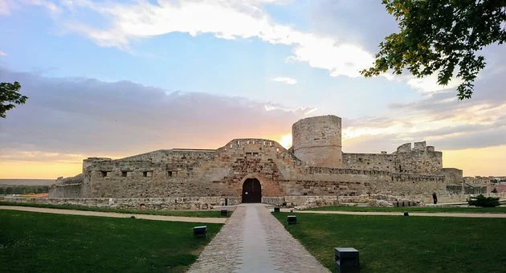

PROVINCIASAVILABURGOS LEON PALENCIA SALAMANCA SEGOVIA SORIA VALLADOLID ENLACES EXTERNOS VOLVER AL INCIO |
ZAMORAÍNDICE
1. LOCALIZACIÓNZamora se encuentra al oeste de la comunidad 2. LOCALIDADES PRINCIPALESPrincipales ciudades:Zamora, Benavente, Toro, Puebla de Sanabria, Morales del Vino y Villaralbo Ubicacion de Zamora capital: Ubicacion de Puebla de Sanabria 3. GEOGRAFÍA DE LA PROVINCIACoordenadas geograficas: Latitud: 41.5033, Longitud: -5.74628, 41° 30′ 12″ Norte, 5° 44′ 47″ Oeste Superficie: 14.928 hectáreas, 149,28 km² Altitud: 656 m. Clima: mediterraneo Tiempo actual de Zamora: 4. HISTORIAEl pasado de Zamora nos dice mucho de su presente y futuro. La historia de la ciudad nos da las claves de la estructura urbanística actual. La Edad Media y el arte románico configuraron la disposición de sus calles, de sus plazas, condicionadas siempre por un río que ha sido y es parte integrante de esta historia y como no, del urbanismo de la ciudad. Todo indica que los primeros pobladores de estas tierras fueron los Vacceos, pero será la Roma imperial quien funda nuestra ciudad “Ocellum Durii” (los ojos del Duero), como una de las poblaciones que destacaba en la calzada romana o Via de la Plata, que partiendo de Mérida llegaba hasta Astorga y cruzaba el Duero por Zamora. De estos primeros contactos con Roma, datan las crónicas del pastor lusitano Viriato. A mediados del siglo VIII llegan los árabes a nuestra ciudad, la llamarían Azemur “olivar silvestre”y Semurah “ciudad de las turquesas”. Alfonso III el Magno, la reconquista en el año 893 y la repuebla rodeándola de murallas, convirtiéndose por su emplazamiento y características en la ciudad fortaleza más importante de los reinos cristianos. En el año 981 es tomada por Almanzor “el terrible” y años después vuelve a manos cristianas definitivamente. Fernando I de Castilla la repuebla en el año 1061 y a él se deben la reedificación de la ciudad y las primeras obras de fortificación que conservamos en la actualidad, convirtiéndola en plaza inexpugnable y concediéndole fuero. Tras la muerte de Fernando I, las tierras quedan divididas entre sus hijos, concediéndole a Urraca el reino de Zamora. Durante su reinado tuvo lugar uno de los acontecimientos más importantes de nuestra historia, lo que se ha dado en llamar “El Cerco de Zamora”. Sancho II, hermano de Urraca, intenta unificar el reino y después de haber despojado de sus tronos a sus hermanos, pone cerco a Zamora el 4 de marzo del año1072; un asedio que duró más de 7 meses, dando pie al famoso dicho de “no se ganó Zamora en una hora”. El aislamiento acabó el 7 de octubre de ese mismo año, con el asesinato del rey Sancho por parte de Bellido Dolfos, quien después de asesinar al rey a las afueras de la ciudad, entró en la misma, perseguido por el Cid, por una puerta conocida hoy en día como “el portillo de la lealtad” o “portillo de la traición”. La edad de oro de nuestra ciudad es el siglo XII. Es en este siglo cuando se configura su estructura urbana y se edifican la mayoría de sus monumentos más representativos, de estilo Románico, lo que le ha supuesto merecida fama de “Ciudad del Románico”. Durante el siglo XIII y como consecuencia de la reconquista avanzada ya hacia el sur, Zamora deja de tener interés estratégico, y entra en un periodo de quietud. Aún así, al finalizar la Edad Media, Zamora era uno de los principales centros urbanos de Castilla y León. Las guerras con Portugal devuelven a nuestra ciudad y a su territorio el valor estratégico. En el siglo XV, ya en tiempos de los Reyes Católicos, es escenario de las luchas que la Reina Isabel mantenía por el trono de Castilla contra su sobrina Juana “la beltraneja”. En la batalla de Toro de 1 de marzo de 1476, salió derrotado Alfonso V de Portugal, consorte de Juana, consolidándose de esta manera en Castilla el trono de Isabel y Fernando. El conflicto contra los franceses, que ocuparon la ciudad durante más de tres años (1809-1813), y el proceso desamortizador, supusieron un duro golpe para el patrimonio histórico-artístico zamorano que se vio seriamente afectado. El pasado de nuestra ciudad sustenta sobradamente el título de “Muy Noble y Muy Leal” que le concediera Enrique IV de Castilla. En los últimos doscientos años ha experimentado un desarrollo que, aunque lento, ha dejado algunas construcciones de notoriedad en la zona este de la capital. Algunas casas nobiliarias del siglo XIX y las magníficas fachadas de tipo Modernista nos hablan de una Zamora que a principios del siglo XX brilla con luz propia. Fuente 5. CULTURAActividades de Ocio y Cultura6. NATURALEZALugares de interes
7. TRADICIONES8. OTROS ASPECTOSCinco personajes relevantes de Zamora
|